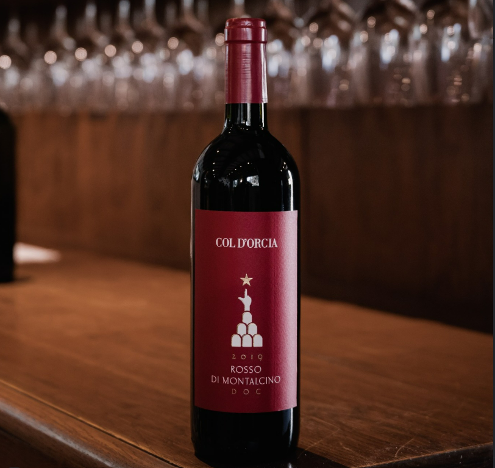

Col d’Orcia: tradizione che guarda al futuro

Numeri chiave
Col d’Orcia unisce tradizione vitivinicola e visione contemporanea, costruendo il proprio modello di crescita su qualità, responsabilità e attenzione al territorio. Ogni scelta aziendale è orientata a valorizzare il legame tra la terra, il lavoro umano e il valore del vino prodotto.
Impatto ambientale
La sostenibilità ambientale è per Col d’Orcia un principio concreto, presente in ogni fase della produzione, dalla coltivazione alla trasformazione. Il report mette in evidenza come la cura del territorio, l’uso responsabile delle risorse e la riduzione degli impatti siano parte integrante della visione aziendale.
Emissioni di CO₂ misurate nell’anno
CO₂e per litro di vino prodotto
Acqua utilizzata con attenzione ai consumi
Indice di biodiversità sul territorio
Team e territorio
Il valore di Col d’Orcia si misura anche attraverso il rapporto con le persone che lavorano ogni giorno nel territorio e contribuiscono a costruire una filiera forte e condivisa. La capacità di crescere insieme a dipendenti, collaboratori e comunità locale rappresenta una parte essenziale della sostenibilità aziendale.
dipendenti
età media
formazione
turnover
Collaborazioni locali e progetti sul territorio per una filiera più forte e sostenibile.
Contatti
Per conoscere meglio Col d’Orcia, approfondire il suo lavoro o ricevere ulteriori informazioni, è possibile contattare l’azienda direttamente tramite i seguenti recapiti.